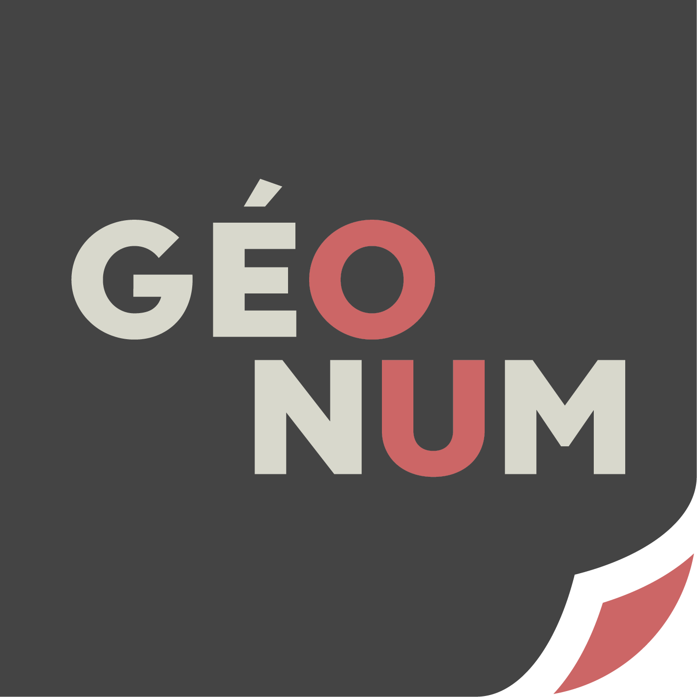

a geospatial tool for querying and visualizing Land Matrix data

The Land Matrix project has been tracking large-scale land acquisitions in nearly 100 countries since 2009. The data available in the database cover almost 100 countries and are continuously updated. Concluded, planned, and failed attempts to acquire land—whether through purchase, lease, or concession—are recorded and classified according to production objectives.
With the support of students from the GEONUM and SENTINELLES master's programs, a tool has been developed that allows users to query Land Matrix transactions based on polygon files (shapefiles, GeoJSON, etc.) and provides “ready-to-use” results while taking into account the nuances of the database, such as the precision level of location data. This tool is now available on this webpage.